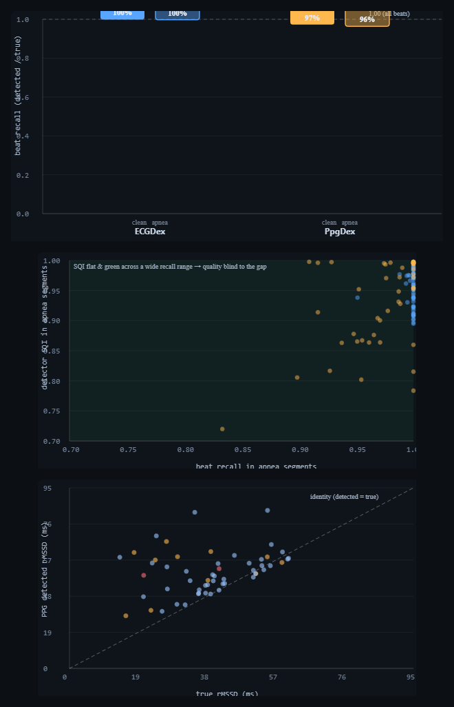

ECGDex · PpgDex nodes, Tepna physiological-signal suite
Background. Wearable heart-rate and HRV pipelines treat every detected beat as ground truth and report a per-beat signal-quality index (SQI) as the trust signal. The two cardiac modalities recover beats by different physics — the electrical QRS by depolarization, the optical pulse by peripheral perfusion — so obstructive apnea, which blunts perfusion without touching depolarization, should affect them asymmetrically, and a correlation-based SQI may not capture whichever errors remain. Methods. On the suite's FULL-lane waveform harness we ran the production ECGDex (Pan–Tompkins QRS) and PpgDex (optical pulse) detectors on one ~9-minute apnea-cluster window per synthetic patient (54 windows per arm; ≈28,100 true beats per arm), matched every detected beat to the co-generated ground-truth beat train (pulse-arrival-corrected, ±120 ms), and split recall and precision by apnea vs clean state alongside the detector's SQI and the downstream rMSSD. Results. QRS recall was essentially complete and apnea-invariant (≈100% clean ≈ 100% apnea; precision ≈100%), and ECG rMSSD tracked truth (bias ≈0%) — a faithful reference. Optical pulse recovery was lower overall (97.3% clean), dipped modestly in apnea as perfusion pushed in-event pulses toward the detector's amplitude floor (96.4%), and the arm mildly over-detected (precision 92.4%). The detector's SQI stayed in its trusted range throughout (0.93→0.90 clean→apnea, never near the 0.5 gate), so it under-represented both the missed and the spurious beats. The imperfect optical train carried a downstream cost: rMSSD was inflated a median +16% versus truth. Conclusion. Beat-yield under apnea is modality-asymmetric — QRS is robust, optical pulse is not — and the residual optical error is largely invisible to a correlation-based SQI and biases HRV upward. When both signals are present, the electrical arm should be the HRV reference and optical HRV should be weighted by event-state, not by SQI alone. This is synthetic ground truth: it certifies the asymmetry and isolates the optical yield error and its HRV consequence — it is not a real-patient miss rate.
Keywords: QRS detection · photoplethysmography · beat recall · precision · signal-quality index · obstructive sleep apnea · perfusion · heart-rate variability · rMSSD · sensor fusion
Wearables find heartbeats two ways: electrically (an ECG chest strap) or optically (the green-light / blood-flow sensor in wrist and arm bands). Sleep apnea chokes blood flow but doesn't touch the heart's electrical signal — so the two methods should cope with apnea differently.
They do. The electrical method finds essentially every beat, even during apnea. The optical method misses some beats and invents others, and it gets worse during apnea. The catch: the watch's own “signal quality” light stays green through these errors, so it never warns you. Those missed beats make the optical heart-rhythm number read about 16% too high — exactly on the worst apnea nights, the opposite of the truth. Bottom line: when a device has both sensors, it should trust the electrical one for heart-rhythm analysis. (Simulation with known truth — it shows the direction and mechanism of the error, not exact human rates.)
A heart-rate or HRV product is only as good as the beat train it recovers. Two failure modes matter: missing real beats (low recall, which merges intervals and corrupts beat-to-beat variability) and inventing beats (low precision, which fragments them). Both are usually summarized for the user by a single per-beat signal-quality index, and downstream consumers — a sleep stager, an apnea screen, a fusion layer — implicitly trust that SQI flags the segments where the beat train cannot be relied upon.
The electrical and optical modalities recover beats by different physics, and that predicts an asymmetry. The QRS complex is driven by myocardial depolarization; the photoplethysmographic pulse is a peripheral blood-volume change. Obstructive apneas and hypopneas blunt peripheral perfusion — attenuating the optical pulse during the event — while leaving depolarization, and therefore the QRS, untouched. So under apnea the optical arm should lose ground the electrical arm does not. A second, modality-independent question is whether the quality index sees whatever error remains: a correlation-based SQI scores a beat by how pulse-shaped it is, not by whether neighbouring beats were missed or spurious. We measure both — the asymmetry and the SQI's coverage of it — with the production detectors, and trace the optical error through to the HRV number it feeds.
The suite's FULL lane renders, for each synthetic patient, a representative ~9-minute window centred on an apnea cluster, in each cardiac modality's native raw form, from one shared master event timeline (so the apnea events, and the underlying RR beat train, are identical across modalities). The ECG arm renders a raw int16 µV waveform at 130 Hz from the timeline's RR beats and runs the unmodified ecgdex-dsp.js (band-pass → Pan–Tompkins R-peak detection → sub-sample refinement → per-beat SQI). The PPG arm renders the 176 Hz Polar-Sense optical signal — in which pulse amplitude is attenuated during apnea/hypopnea windows (the perfusion model) — and runs the unmodified ppgdex-dsp.js (best-SNR channel → band-pass → foot/peak detection → per-beat SQI, the latter a template-correlation × motion score with no amplitude term). No detector parameters were altered; timestamps follow the suite Clock Contract.
The ground-truth beat train for each window is the master-timeline RR series (the ECG arm additionally carries it as device-RR). Because the optical pulse lags the R-wave by a pulse-arrival time, detected beats are matched to truth after removing the per-window median detected−true lag; a true beat is recovered if a detected beat lies within ±120 ms of its lag-corrected time (recall), and a detected beat is a true positive if it lies within that window of some true beat (precision). Each true beat is labelled apnea or clean by the timeline's own event windows; each detected beat carries the detector's reported SQI. Recall, precision and mean SQI are pooled within apnea and clean strata.
To isolate the yield effect on HRV from the detectors' internal interval-editing policies, rMSSD is reconstructed identically from the detected beat-times and from the true beat-times (times → RR → local-median outlier clean → rMSSD); the bias is their difference. The synthetic ECG renderer places each R-peak at its true beat time, so the detected ECG R-to-R intervals equal the true RR (modulo 130 Hz quantization) and ECG rMSSD is faithful — the ECG arm is the rMSSD reference here (ECGDex's HRV is independently validated on real ECG). The PPG arm's truth (the RR train) and detection (pulse feet) are both genuine, so its bias is a real consequence of the recovered train.
The run reported here covers 60 sampled patients (one ECG window and one PPG window each; 54 valid windows per arm; ≈28,100 true beats per arm, ≈4,500 of them inside apnea/hypopnea events).
| Detector | Windows | True beats | Recall (all) | Recall (clean) | Recall (apnea) | Precision | SQI clean | SQI apnea | rMSSD bias |
|---|---|---|---|---|---|---|---|---|---|
| ECGDex (QRS) | 54 | 28,115 | 100.0% | 100.0% | 100.0% | 100.0% | 0.97 | 0.96 | ≈0% |
| PpgDex (pulse) | 54 | 28,076 | 97.1% | 97.3% | 96.4% | 92.4% | 0.93 | 0.90 | +16.1% |
QRS detection is yield-robust to apnea. Recall was ≈100% in both clean and apnea segments — the electrical signal is indifferent to the perfusion collapse that defines the event — with precision ≈100% and SQI ≈0.96, and the recovered R-to-R intervals reproduced the true RR so ECG rMSSD bias was ≈0%. The QRS arm therefore recovers essentially the whole beat train regardless of respiratory state and faithfully preserves its variability; it is the reference against which the optical arm is measured.

qrs-yield-analysis.html). Top: beat recall in clean (solid) vs apnea (outlined) segments — ECG QRS sits at ≈100% in both, while PPG pulse recovery is lower and dips slightly in apnea. Middle: per-window SQI vs recall in apnea segments — every point sits inside the "green" band (SQI ≥0.5) across a wide spread of recall, so the quality index under-represents the missed beats; ECG (blue) clusters top-right, PPG (amber) spreads to lower recall at still-high SQI. Bottom: PPG detected vs true rMSSD — the cloud lies above the identity line (median +16% inflation), and the lowest-recall windows (red) sit highest. Dark theme is the tool's native rendering.The optical arm tells a different story on every axis. Overall recall was 97.3% in clean segments and dipped to 96.4% in apnea: the perfusion attenuation lowers in-event pulse amplitude toward the detector's relative-amplitude floor, so a small fraction of apnea pulses adjacent to full-perfusion beats fall below threshold and are missed. The arm simultaneously over-detects — precision 92.4%, i.e. ≈8% of reported pulses do not correspond to a true beat — the residual of the known synthetic-vs-real false-positive tendency. So the optical beat train is at once missing some real apnea beats and adding some spurious ones, both of which corrupt beat-to-beat timing.
Crucially, the quality index does not separate the good segments from the bad. Mean SQI moved only from 0.93 (clean) to 0.90 (apnea) and never approached the 0.5 clean-beat gate (Figure 1, middle): because SQI scores each detected beat by pulse-shape correlation, the apnea beats that are detected still look clean, and the missed and spurious beats are simply not represented in it. A consumer that trusts SQI to mark unreliable stretches would see green across the very events where the optical train is least faithful.
Reconstructing rMSSD identically from the detected and true beat-times, the recovered PPG train was inflated a median +16% relative to truth, largest in the windows with the lowest apnea recall (Figure 1, bottom). Missed pulses merge two short intervals into one long one — a large beat-to-beat jump that rMSSD, a root-mean-square of successive differences, is maximally sensitive to — and the residual pulse-arrival-time jitter and false positives add to it. An HRV summary read off the optical channel without event-aware weighting therefore reports a person as more beat-to-beat variable specifically on their most apneic nights, the opposite of the true autonomic effect. (This residual is the reason the optical arm must be trimmed before a cross-modality rMSSD equivalence comparison: the inflation is yield error, not the pulse-arrival-time jitter such a comparison is meant to isolate.)
The two cardiac modalities fail differently, as their physics predicts. QRS detection is electrical and apnea-invariant; optical pulse detection is perfusion-dependent, recovers fewer beats overall, loses a few more inside apnea events, and adds spurious ones. The practical hazard is compounded by the trust signal: a correlation-based SQI answers "does this beat look real?", not "are beats missing or invented here?", so it stays green through an error it structurally cannot see. The net effect on the headline HRV number is an upward bias concentrated exactly where respiratory disease is worst.
Two consequences follow for the suite. First, fusion should not weight PPG HRV by SQI alone: the Integrator already carries the apnea/CVHR event channel, and optical HRV should be down-weighted by event-state (or cross-checked against the ECG/RR arm) rather than trusted because quality reads green. Second, the asymmetry argues for treating the electrical arm as the HRV reference whenever both are present, and reading the optical arm primarily for what it recovers robustly (rate, gross trend) rather than for fine beat-to-beat variability during respiratory events.
qrs-yield-analysis.html → set patients → "Run cohort". The recall bars, the SQI-vs-recall scatter, the PPG rMSSD scatter, the headline cards and Table 1 populate live. Export qrs-yield-results.csv (per-window), qrs-yield-stats.json (pooled), qrs-yield-figures.png.ecgdex-dsp.js (ECGDSP.analyze → refined R-peak times + per-beat SQI) and ppgdex-dsp.js (PPGDSP.analyze → pulse foot times + per-beat SQI), driven through the FULL-lane worker realm (qrs-yield-worker.js, same script set as cohort-worker.js's full lane).cohort-full.js (renderECGInt16) and synth-gen.js (renderPPG, buildRR, pickWindow) from the shared master timeline; cohort sampling via cohort-gen.js.This is a FULL-lane pilot: each patient renders and scores raw waveforms (130 Hz ECG, 176 Hz optical), so runtime per patient is far higher than the FAST metric lanes and a 100k-scale run is impractical (hours). Statistical precision, however, comes from pooled beats, not patients — each ~9-minute window contributes ~520 beats — so a few dozen windows already pool tens of thousands of beats and give tight recall/precision estimates (binomial SE √(p(1−p)/N_beats) with N_beats ≈ 28,000 is well under ±0.3%). The binding cost is wall-clock, not statistics.
| Tier | Patients | What it buys |
|---|---|---|
| Minimum (acceptable) | ~30 | ~15k pooled beats/arm; the modality asymmetry, the SQI-invisibility, and the +16% HRV inflation are all clear with recall/precision to ≈±0.4%. |
| Recommended | ~60–100 | ~28k–50k pooled beats/arm; pooled rates to ≈±0.3% and enough per-window points for the SQI-vs-recall and rMSSD scatters. This run used 60 (54 valid windows/arm). |
| This run | 60 | 54 valid windows/arm, ≈28,100 true beats/arm (≈4,500 inside apnea events). |
| Diminishing returns | > ~200 | Pooled-beat CIs are already <±0.2%; more patients mainly add FULL-lane hours. Real value past here comes from multiple/whole-night windows per patient (drift, motion) rather than more single windows. |
Practical reading: ~30 patients to establish the asymmetry, ~60–100 for publication-grade pooled rates; beyond ~200 the FULL-lane runtime cost outweighs the shrinking CIs — widen to whole-night or multi-window records instead of more patients.
CLAUDE.md (Clock Contract, evidence-grade system), COHORT-VALIDATION-README.md, COHORT-WORKFLOW-GUIDE.md, PAPERS-AND-FIXES-BRIEF.md, Tepna suite.cgm-hrv-coupling.html (cross-node coherence), nights-icc.html (reliability), Tepna working preprint series.